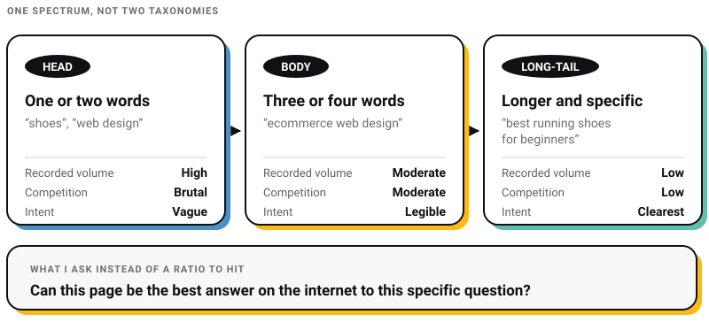
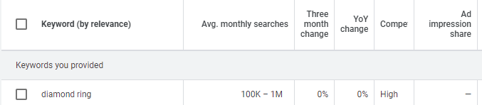
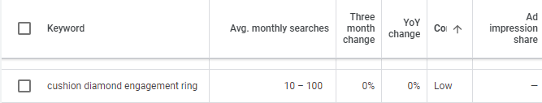
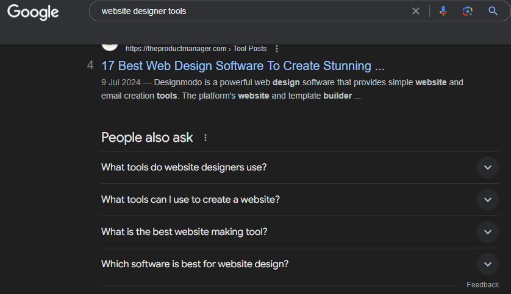
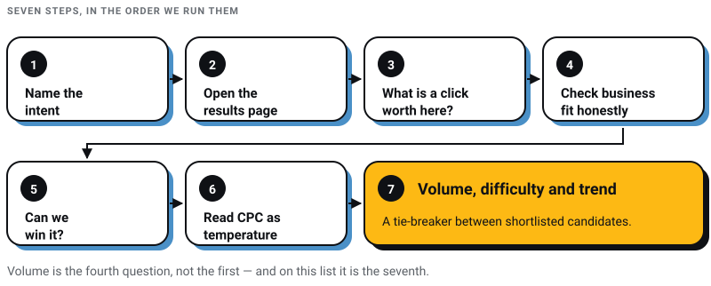

Digital Marketing
Digital Marketing
AEO vs GEO vs SEO: What Actually Matters in 2026 (And What Is Just Noise)
Learn about AEO vs GEO vs SEO. Discover what changed with AI search, what still matters, and how to optimize for Google AI Overviews, ChatGPT, and…

I sell SEO retainers, so let me open with the admission that costs me money. The single number this craft is organised around, monthly search volume, describes less of reality every year. In the first four months of 2026, 68.01% of Google searches in the United States ended without a click on anything, up from 60.45% in 2024 (SparkToro’s analysis of Similarweb clickstream data, reported by Search Engine Land on 9 June 2026). Volume still counts the question being asked. It has stopped being a decent count of the visit you hoped to earn from it.
That does not make keyword research obsolete. It makes it the part of the job where you decide which questions deserve a page at all, instead of the part where you export a list of phrases from a tool and hand it to a writer.
Every figure below was checked against a source I could open on 30 July 2026. Anything I could not verify is not here.
Keyword research in 2026 runs in this order: name the intent behind the query, judge whether answering it can bring a human to your site now that most searches end without a click, then check whether you can realistically win the page, and only then look at volume, difficulty and cost per click. Volume is the fourth question, not the first. On our own client work the keywords that pay are usually the ones with too little recorded volume for anyone else to bother with.
Three findings changed how I read a keyword report. All three come from people who published their method.
Clicks roughly halve when an AI summary appears. The Pew Research Center tracked real browsing behaviour from 900 US adults across 68,879 Google searches in March 2025. With an AI summary on the page, users clicked a traditional result on 8% of visits, against 15% of visits without one. Links inside the summary got clicked on 1% of visits, and 26% of visits to a page carrying an AI summary ended the browsing session entirely, against 16% without (Pew Research Center, July 2025).
Ranking and getting quoted have come apart. Ahrefs looked at 863,000 keyword SERPs and found that 37.9% of URLs cited in AI Overviews also appear in the first ten results, while around 31% of citations come from pages ranking outside the top 100 (Ahrefs, March 2026). A page can be the answer without being a ranking. A ranking can exist without being the answer. I have written about what that split means for the acronyms being sold around it in AEO versus GEO versus SEO.
Queries got longer. Google says the average AI Mode search is triple the length of a traditional Search query, that AI Mode has passed a billion monthly active users, and that searches beginning “where to”, “where should I” and “ideas for” are growing (Google, 19 May 2026). Longer queries fragment across more unique strings, and unique strings are exactly what a volume database records as zero.
Google’s own guidance, published on 15 May 2026, tells you not to chase those fragments one at a time: “you don’t have to worry that you don’t have enough ‘long-tail’ keywords or haven’t captured every variation” (Google Search Central). The same document says the biggest lever is content people find unique, compelling and useful, and that optimising for generative AI search “is optimizing for the search experience, and thus still SEO”. So the craft holds. The scorecard is what broke.
One practical consequence: your measurement is thinner than it used to be. Search Console added generative AI performance reports on 3 June 2026, and they report impressions, pages, countries and devices, with no clicks, no click-through rate and no query data (Google Search Central Blog). You can now see that you appeared. You cannot see what appearing earned, or which query triggered it.
So read volume as evidence that a question is being asked, and treat the traffic you will get from it as a fraction of that, decided by whether the answer can be finished on the results page. “What is a sitemap” is a question a machine will answer without you. “Web design cost in Kolkata for a 12-page corporate site” is a question that ends in a conversation.
Sorting a list by intent takes ten minutes and saves months. Four categories cover almost everything we see.
Check the intent against the live results page before you commit, not against your assumption. If Google is showing product listings and no articles, an article will not rank there no matter how good it is.
This gets taught as two separate taxonomies. It is one spectrum, and here is the version I use.
Head terms are one or two words. “Shoes”, “footwear”, “web design”. High recorded volume, brutal competition, intent so vague it is nearly useless.
Body terms are three or four words. “Men’s running shoes”, “ecommerce web design”. Moderate volume, moderate competition, intent legible enough to write to.
Long-tail terms are longer and specific. “Best men’s running shoes for beginners”, “affordable men’s beginner running shoes”. Low recorded volume, low competition, and the clearest intent of the three.
Broad against niche is the same idea from the business side. A shoe retailer’s broad terms are “shoes” and “footwear”; the niche terms are “men’s dress shoes” and “men’s casual shoes”. Broad terms describe your category to a search engine. Niche terms describe your actual inventory to a buyer. You need enough of the first to be understood and enough of the second to be chosen.
What I no longer do is treat the mix as a ratio to hit. I ask a different question per term: can this page be the best answer on the internet to this specific question? If yes, it goes in the plan, whatever the volume column says.

This is the most useful part of keyword research, and it got more useful once queries got longer.
My working definitions: under about 100 searches a month is low volume, and no recorded searches at all is zero volume. Both are tool outputs, not facts about the world. A zero in Ahrefs or Semrush means the tool has no data for that string, and Google’s own documentation says even Keyword Planner’s figures are rounded (Google Ads Help). Zero volume and zero demand are different things, and the gap between them is where competitors are not looking.


The argument for these terms does not need a conversion statistic behind it, which is fortunate, because the ones in circulation do not lead back to a study you can read. Specificity of query and readiness to act travel together for obvious reasons: nobody types eleven words into Google casually.
| Factor | Low search volume | Zero recorded volume |
|---|---|---|
| What the tool says | Under roughly 100 searches a month | No recorded searches, which usually means no data rather than no demand |
| Typical shape | Long-tail, three words or more | Long, oddly phrased, or newly coined |
| Competition | Usually low, because the volume column scares people off | Often nothing purpose-written at all |
| Traffic | Small and steady, and highly qualified | Unpredictable, occasionally sudden if the topic catches |
| Best use | Answering one narrow question properly, often as a section of a larger page | Emerging terms, new tools, new regulations, questions clients have started asking |
| Main risk | Building a thin page per variation instead of one strong page | Writing for a question nobody is actually asking |
Usually not, and the Ahrefs finding above is the reason. Roughly 31% of AI Overview citations come from pages that rank beyond position 100. Pages cited from that far down are not random; they are pages that answer one narrow question unusually well. That is precisely what a low-volume keyword describes. Cutting them because a column says 40 searches a month is optimising for a metric that no longer maps to outcomes.
What I would cut is the habit of giving each one its own thin page. Google’s 2026 guidance says explicitly that you do not need to fragment content for machines, and that you should not worry about capturing every variation. Cluster the variations, answer them in one authoritative page with honest subheadings, and let the page earn all of them.

Writing for them. One page per cluster, not per phrase. Answer the question in the first two sentences, then earn the rest of the page. Use the phrasings real people use, including the awkward ones, because the awkward ones are the uncontested ones. Keep the page updated when the answer changes, and say what changed. The on-page mechanics are unglamorous and unchanged; I have listed them in our SEO checklist.
Tracking them. A keyword doing 40 searches a month will never look impressive on a rank tracker dashboard. Judge these pages on enquiries, assisted conversions and Search Console impressions for the cluster, and give them two quarters before deciding. Add the AI surface to that: ask your own buyer questions on ChatGPT, Perplexity and AI Mode once a month and record whether you get cited. The method we use for that is in how to get mentioned by ChatGPT.
Tools rank and filter ideas. They are poor at generating them. These are the sources I go to before opening a tool at all.
Tool pricing rots faster than anything else in a guide like this, so I checked every figure against the vendor’s own page on 30 July 2026.
| Tool | Price on 30 July 2026 | Free access | What I use it for |
|---|---|---|---|
| Google Keyword Planner | Free | Needs a Google Ads account with billing details entered before keyword ideas unlock | Demand sanity check and cost-per-click reality check. Volume figures are rounded by Google’s own admission. |
| Ahrefs | Starter $29/mo, Lite $129/mo, Standard $249/mo | A limited free tier for your own site | Matching-terms filtering, content gap against competitors, and the under-ten-volume sweep. |
| Semrush | SEO $139/mo, Pro+ $299/mo on monthly billing | Free account: ten reports a day | Competitor keyword sets and paid-search overlap. |
| Ubersuggest | Personal $29/mo, Business $99/mo | A one-time seven-day trial, and nothing permanent | A cheap second opinion when two tools disagree about volume. |
Four things worth stating plainly, because keyword guides get them wrong constantly.
Two tools I have deliberately left out of the table. Moz Pro’s Keyword Explorer and Mangools, which is where KWFinder now lives as part of a suite alongside SERP analysis, rank tracking and backlinks. Both are credible. I could not verify either one’s current pricing from its own page on 30 July 2026, and I would rather leave a gap than publish a number I did not read myself. Check their pricing pages directly.
On tool disagreement: two tools will give you two different volumes for the same keyword, and neither is the truth. They model different clickstream panels. Use one tool as your baseline for consistency, use a second only to break ties, and never present a volume figure to a client as though it were measured.
Seven steps, in the order we actually run them. Volume is deliberately last.

Adding LSI keywords. Latent semantic indexing is not part of how Google works, and Google said so in 2019 (MarTech). Writing about a topic properly covers the related terms anyway; sprinkling synonyms to satisfy an algorithm that does not exist is busywork.
Chasing third-party authority scores. I used to check MozRank and Domain Authority before deciding whether a page was winnable. Those are vendor estimates, useful only as a rough sort. What matters is who the ranking pages are and whether you can plausibly write something better than theirs.
Publishing a page per keyword variation. Google’s 2026 guidance is explicit that content does not need breaking into fragments for machines and that you need not capture every variation. One strong page beats six thin ones, and it survives an AI answer better because there is more in it worth quoting.
Barnacle SEO. Will Scott’s term for attaching yourself to a site that already has the authority you lack: directories, marketplaces, respected industry publications, Q and A threads. It works better now than it did, because AI engines cite third-party sources heavily when deciding who to recommend. Find where your category is already discussed, then earn a place there rather than trying to outrank it.
Content gap analysis. Feed two or three competitors into a tool that compares keyword sets and read what they rank for and you do not. Most of what comes back is noise. The signal is the cluster you had not thought of.
Covering the adjacent vocabulary. Not for the algorithm, but because a page about hiking trails in the Pacific Northwest that never mentions trailheads, permits or seasons is an incomplete page, and completeness is what gets quoted.
Two things make keyword research in Kolkata different from keyword research written up in San Francisco.
First, the AI surface is not a future channel here. India has 100 million weekly active ChatGPT users, second only to the United States, and the largest student user base of any country, according to Sam Altman (TechCrunch, February 2026). If your buyers are Indian and your keyword plan only accounts for Google’s ten blue links, you have planned for part of the market.
Second, local intent behaves differently from national intent. “Web design company in Salt Lake” has trivial recorded volume and converts far better for us than anything with a national volume figure, because a business two kilometres away wants to sit across a table. If a meaningful share of your work is local, the map pack deserves its own plan, and I have set that out in our guide to local SEO ranking factors.
Does search volume still matter in 2026?
Yes, but as a fourth-order input rather than the first thing you sort by. It tells you a question is being asked. It no longer tells you a visit will follow, because 68.01% of US Google searches in early 2026 ended without a click (SparkToro, June 2026), and clicks roughly halve when an AI summary appears (Pew Research Center, July 2025). Intent, winnability and business fit come first.
Is it worth targeting zero-volume keywords?
Often, yes, and more so than a year ago. A zero in a keyword tool means the tool has no data for that string, not that nobody is searching. Around 31% of AI Overview citations come from pages ranking beyond position 100 (Ahrefs, March 2026), which are usually pages that answer one narrow question properly. Cluster the variations into one page rather than publishing a thin page each.
What is the best free keyword research tool?
Google Keyword Planner, with your own Search Console Performance report next to it. Planner is free but needs a Google Ads account with billing details entered, and Google’s own documentation says its volume figures are rounded. Semrush’s free account allows ten reports a day, which is enough to check a shortlist. Ubersuggest is no longer free.
How many keywords should one page target?
One question, and every phrasing of that question. Google’s May 2026 guidance says you do not need to capture every variation or split content into fragments for AI, so the practical answer is one page per cluster with honest subheadings, not one page per phrase.
Are LSI keywords real?
No. Google confirmed in 2019 that latent semantic indexing is not part of its ranking systems. Write about the topic completely and the related vocabulary takes care of itself.
How do I know whether AI search is taking my keyword traffic?
Compare impressions against clicks in Search Console for the queries you rank for; a rising impression count with flat clicks is the signature. Since 3 June 2026 there is also a generative AI performance report in Search Console, though it shows impressions, pages, countries and devices only, with no clicks, click-through rate or query data.
The version of keyword research I was taught treated the volume column as the answer and everything else as decoration. That version is finished, and the numbers above are why. What replaces it is slower and more like judgement: decide which questions your business is genuinely the best answer to, cluster them properly, write pages worth quoting, and use the tools to check your instinct rather than to replace it.
Volume tells you a question exists. It has never told you that you deserve to answer it. That part is still your job, and it is the part that compounds.
If you want a second pair of eyes on a keyword plan, or you have a page that ranks and does not earn, our team at Pixel Street works on this daily for brands including Coca-Cola, ITC and Marico, from Salt Lake in Kolkata.
18 min read 25 cited sources Digital Marketing
Author
Khurshid Alam is the founder of Pixel Street, an AI-native design & development studio. Design thinking on weekdays and spreadsheets on weekends.
He writes about growth, design, and AI, mostly because someone has to say the quiet parts out loud.
Digital Marketing
Learn about AEO vs GEO vs SEO. Discover what changed with AI search, what still matters, and how to optimize for Google AI Overviews, ChatGPT, and…
 Digital Marketing
Digital Marketing
Discover the 5 reasons ChatGPT recommends your competitors instead of your business—and how to improve AI visibility, SEO, GEO, and AEO.
 Digital Marketing
Digital Marketing
Want ChatGPT to recommend your brand? Learn how AI chooses businesses, where citations come from, and practical ways to increase your visibility.
 Digital Marketing
Digital Marketing
Imagine stumbling upon a secret formula that not only boosts your content’s visibility but also ensures it towers over the competition. That’s exactly…